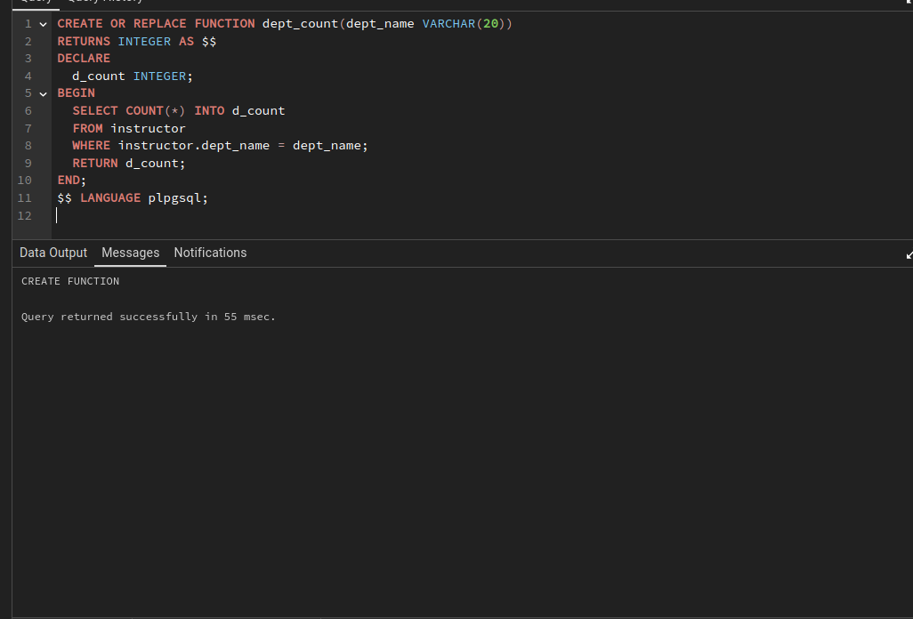
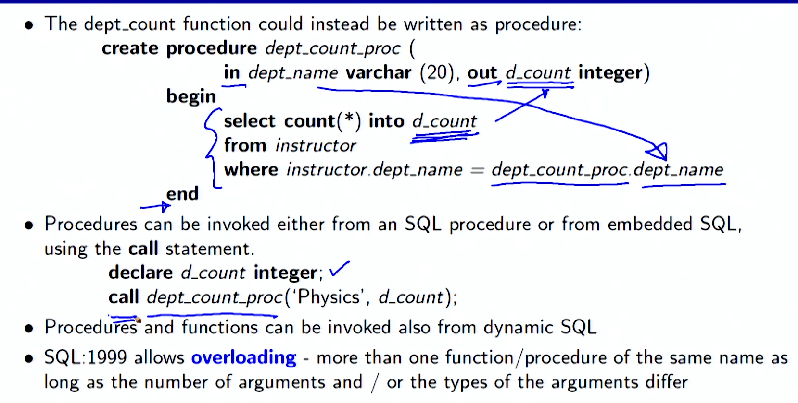
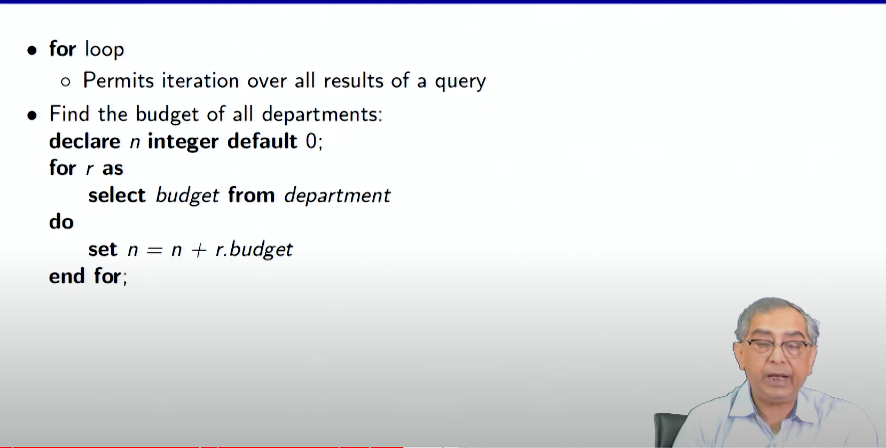

Lecture 3.5 - Advanced SQL
Summary Functions and Procedural Constructs
SQL:1999 added support for functions and procedures to SQL. These functions and procedures can be written in SQL itself or in an external programming language (such as C, Java, or Python). Functions written in an external language are particularly useful for working with specialized data types, such as images or geometric objects.
SQL:1999 also supports a rich set of imperative constructs, including loops, if-then-else statements, and assignment. Many databases have proprietary procedural extensions to SQL that differ from SQL:1999.
Functions
Functions are used to perform calculations or retrieve data from the database. They can be defined using the CREATE FUNCTION statement. The following example creates a function that returns the count of the number of instructors in a given department:
This function can then be used to find the department names and budgets of all departments with more than 12 instructors:

Procedures
Procedures are used to perform a series of actions, such as updating multiple rows in a table or inserting a new row into a table. They can be defined using the CREATE PROCEDURE statement. The following example creates a procedure that updates the salary of an employee:
CREATE PROCEDURE update_salary(emp_id INT, new_salary NUMERIC(8, 2))
BEGIN
UPDATE employee
SET salary = new_salary
WHERE emp_id = emp_id;
END;
This procedure can then be called to update the salary of an employee:

Language Constructs
SQL:1999 supports a rich set of imperative constructs, including loops, if-then-else statements, and assignment. These constructs can be used to create complex procedures and functions.
The following table summarizes the most common language constructs:
| Construct | Description |
|---|---|
BEGIN ... END |
Compound statement |
DECLARE |
Declare a local variable |
SET |
Assign a value to a local variable |
IF ... THEN ... ELSE |
Conditional statement |
WHILE |
Loop while a condition is true |
REPEAT |
Loop until a condition is true |
FOR |
Loop through a set of values |
CASE |
Conditional statement with multiple branches |
SIGNAL |
Signal an exception |
DECLARE HANDLER FOR |
Declare a handler for an exception |

External Language Routines
SQL:1999 allows the definition of functions and procedures in an imperative programming language (such as C, Java, or Python) that can be invoked from SQL queries. Such functions can be more efficient than functions defined in SQL, and computations that cannot be carried out in SQL can be executed by these functions.
To declare an external language function or procedure, use the CREATE FUNCTION or CREATE PROCEDURE statement and specify the language and the external name of the function or procedure. For example, the following statement creates a function that returns the count of the number of instructors in a given department:
CREATE FUNCTION dept_count(dept_name VARCHAR(20))
RETURNS INTEGER
LANGUAGE C
EXTERNAL NAME '/usr/avi/bin/dept_count';
Triggers
Triggers are database objects that are used to automatically perform actions when certain events occur in the database. For example, a trigger can be used to automatically update a table when a row is inserted into another table.
Triggers are defined using the CREATE TRIGGER statement. The following example creates a trigger that updates the total_credits column in the student table when a row is inserted into the takes table:
CREATE TRIGGER update_total_credits
AFTER INSERT ON takes
FOR EACH ROW
BEGIN
UPDATE student
SET total_credits = total_credits + (
SELECT credits
FROM course
WHERE course.course_id = NEW.course_id
)
WHERE student.id = NEW.student_id;
END;
Functionality vs. Performance
Triggers can be a powerful tool for automating database operations, but they can also have a negative impact on performance. The following are some factors that can affect the performance of triggers:
- The number of triggers: The more triggers that are defined on a table, the greater the impact on performance.
- The complexity of the triggers: Complex triggers that perform multiple operations can be more time-consuming to execute than simple triggers.
- The frequency of the triggering events: Triggers that are activated by frequent events can have a significant impact on performance.
It is important to carefully consider the impact of triggers on performance before creating them. If a trigger is not necessary, it should not be created. If a trigger is necessary, it should be designed to be as efficient as possible.
How to Use Triggers
Triggers can be used for a variety of purposes, including:
- Maintaining data integrity: Triggers can be used to enforce business rules and ensure that data is consistent.
- Automating tasks: Triggers can be used to automate tasks that would otherwise need to be performed manually.
- Improving performance: Triggers can be used to improve performance by performing operations